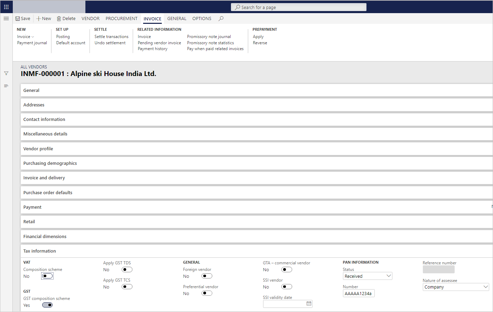
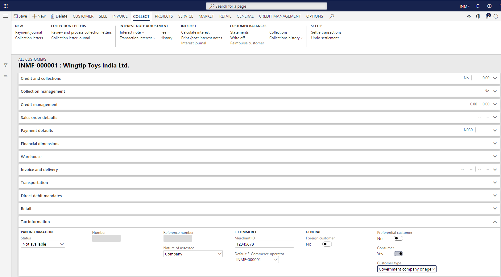

Define GSTINs and reference number sequences
To make the India localization solution for Goods and Services Tax (GST) in Microsoft Dynamics 365 Finance available, you must complete the following master data setup:
- Define a business vertical.
- Update the state code and union territory.
- Create a Goods and Services Tax Identification Number (GSTIN) master.
- Define GSTINs for the legal entity, warehouse, vendor, or customer masters.
- Define Harmonized System of Nomenclature (HSN) codes and Service Accounting Codes (SACs).
- Create main accounts for the GST posting type.
- Create a tax settlement period.
- Attach the GSTIN to a tax registration group.
Define GSTINs and number sequences for legal entities
- Go to Organization administration > Organizations > Legal entities.
- On the Addresses FastTab, select More options > Advanced.
- On the Tax information FastTab, select Add.
- In the Name or description field, enter a value.
- On the GST FastTab, in the GSTIN/GDI/UID field, select a value.
- In the Reference number sequence group field, select a value.
- Set the Primary option to Yes, and then select Yes to acknowledge the message that you receive.
- Save the record, and then select Close.
- Repeat steps 3 through 8 for all the other required addresses for the legal entity.
Define GSTINs and number sequences for warehouses
- Go to Inventory management > Setup > Inventory breakdown > Warehouses.
- On the Addresses FastTab, select Advanced.
- On the Tax information FastTab, select Add.
- In the Name or description field, enter a value.
- On the GST FastTab, in the GSTIN/GDI/UID field, select a value.
- Set the Primary option to Yes, and then select Yes to acknowledge the message that you receive.
- Save the record, and then select Close.
Define GSTINs for vendors
Go to Accounts payable > Vendors > All vendors.
On the Addresses FastTab, select More options > Advanced.
On the Tax information FastTab, select Add.
In the Name or description field, enter a value.
On the GST FastTab, in the GSTIN/GDI/UID field, select a value.
Set the Primary option to Yes, and then select Yes to acknowledge the message that you receive.
Save the record, and then select Close.
On the Tax information FastTab, set the GST composition scheme option to Yes if a composition scheme is used to purchase from the dealer.

Define GSTINs for customers
Go to Accounts receivable > Customers > All customers.
On the Addresses FastTab, select More options > Advanced.
On the Tax information FastTab, select Add.
In the Name or description field, enter a value.
On the GST FastTab, in the GSTIN/GDI/UID field, select a value.
Set the Primary option to Yes, and then select Yes to acknowledge the message that you receive.
Save the record, and then select Close.
On the Tax information FastTab, set the Consumer option to Yes to identify the customer as a consumer.
For customer sales through an e-Commerce operator, enter a value in the Merchant ID field, and select a value in the Default E-Commerce operator field.
For sales with government companies or other agencies, in the Customer type field, select Govt company or other agencies.
